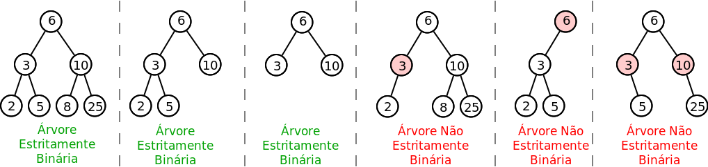

Use como base as classes BTree<T> e BTNode<T> conforme descritas no exercício 2 da aula prática.
Acrescente à classe dada um novo método public boolean strict() que devolve true se a árvore for estritamente binária ou false caso contrário..
Uma árvore é estritamente binária se não existir nenhum nó só com um filho, ou seja, se todos os seus nós têm exactamente dois filhos ou são folhas (zero filhos). A figura seguinte ilustra seis árvores binárias, sendo que as três primeiras são estritamente binárias e as três últimas não (a ver vermelho estão indicados os nós que não respeitam a condição pedida).

Deverá submeter apenas a classe BTree<T>, acrescentando o método strict como pedido (e sem apagar ou modificar nenhum dos outros métodos dados como base). Pode assumir que terá acesso no Mooshak à classe BTNode<T> (não a pode mudar) e se precisar pode criar outros métodos auxiliares. O Mooshak irá criar várias instâncias da sua classe e irá fazer uma série de testes ao método por si implementado.
Os exemplos correspondem às seis árvores da figura:
| Árvore em preorder | Chamada | Valor de retorno |
|---|---|---|
| t = 6 3 2 N N 5 N N 10 8 N N 25 N N | t.strict() | true |
| t = 6 3 2 N N 5 N N 10 N N | t.strict() | true |
| t = 6 3 N N 10 N N | t.strict() | true |
| t = 6 3 2 N N N 10 8 N N 25 N N | t.strict() | false |
| t = 6 3 2 N N 5 N N N | t.strict() | false |
| t = 6 3 N 5 N N 10 N 25 N N | t.strict() | false |
Conteúdo de Fernando Silva (DCC/FCUP), migrado de dcc.fc.up.pt/~fds/aulas/EDados/2526/praticas/problems/prob205.html.